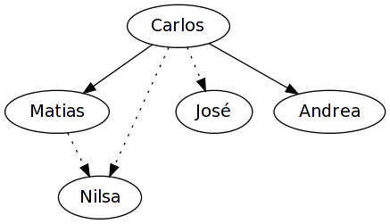

La Universidad de Stanford decidió abrir varios de sus más populares cursos a todo el mundo de forma gratuita y para cursado no presencial. En esta página intentamos resumir las características de ellos. De momento los de Ciencias de la Computación son los que más atención han recibido debido a que el grupo primitivo se interesó más en ellos pero es algo que iremos mejorando paulatinamente.
A favor:
- excelente oportunidad para aprender
- los aprobados reciben un reconocimiento firmado por los instructores
- son durante nuestras vacaciones de verano
- son gratuitos
En contra:
- están en inglés (aunque la mayoría ofrecen transcripciones de los videos y hasta traducciones)
- son un poco intensivos
Grupo:
